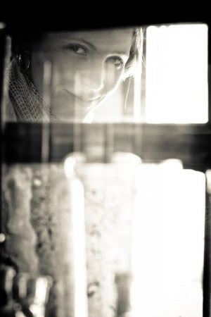
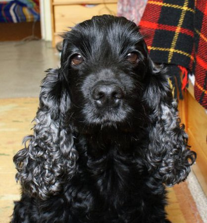
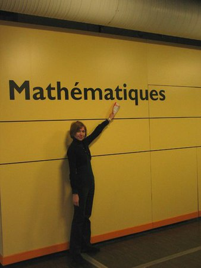
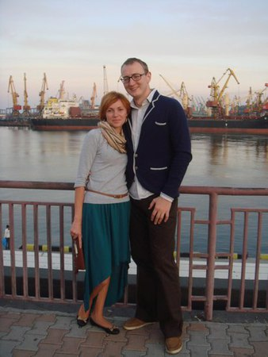
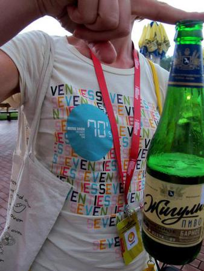
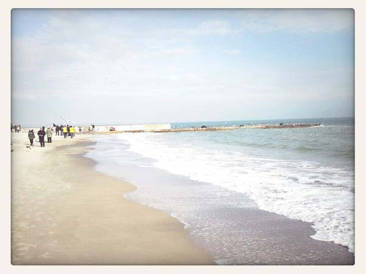
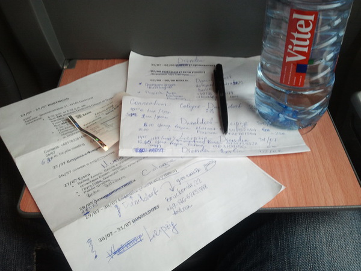

Путешествует по жизни и миру с математикой, вдохновением и друзьями.
1999-2012
Успешно отучилась в БГУ, закончила магистратуру, аспирантуру и написала кандидатскую работу.
Поработала на киностудии, в фотомастерской, репетитором 1-11 классов и преподавателем высшей математики в БГУИР.
2012-н.в.
Заядлый посетитель всех летних кинофестивалей в Одессе.
А что тут еще добавить?
Самостоятельные путешествия — это легко и совершенно без хлопот.
Болгария
Литва
Латвия
Западная Украина
Испания, Барселона
Канарские острова
Париж, Франция
Краков, Польша
Будапешт, Венгрия
Вена, Австрия
и многие-многие другие места...